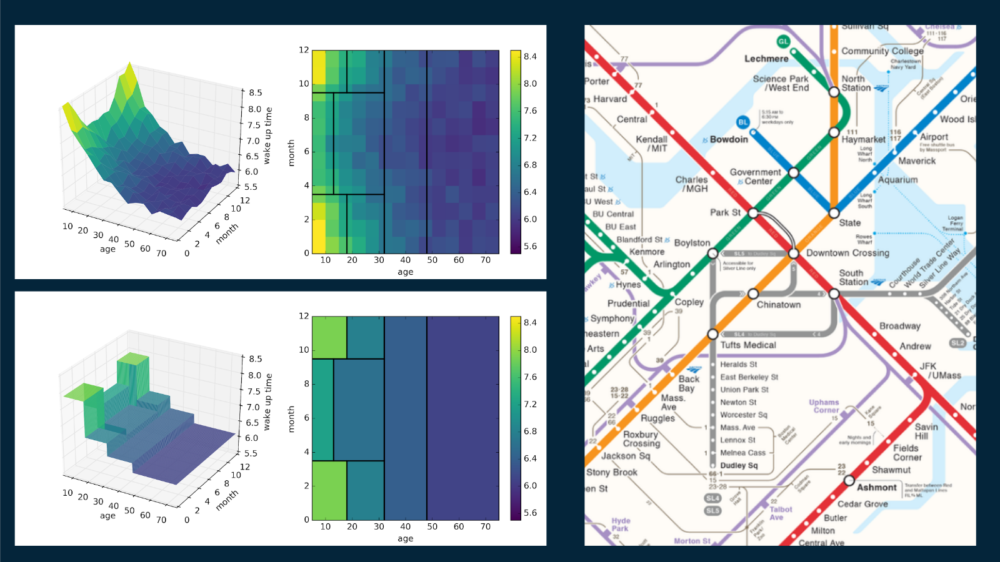
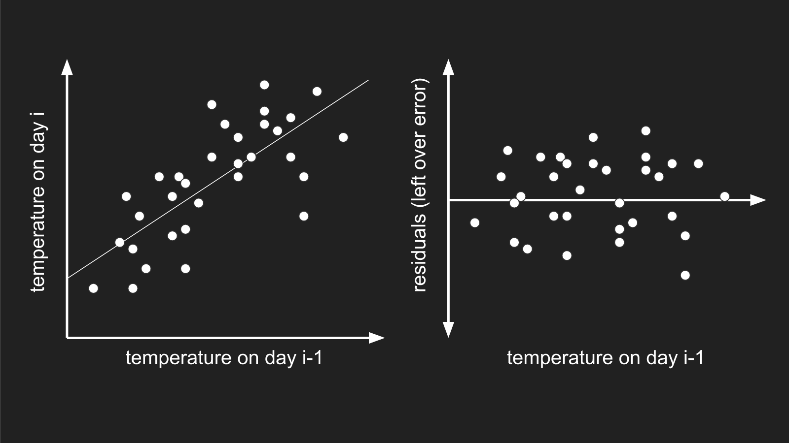
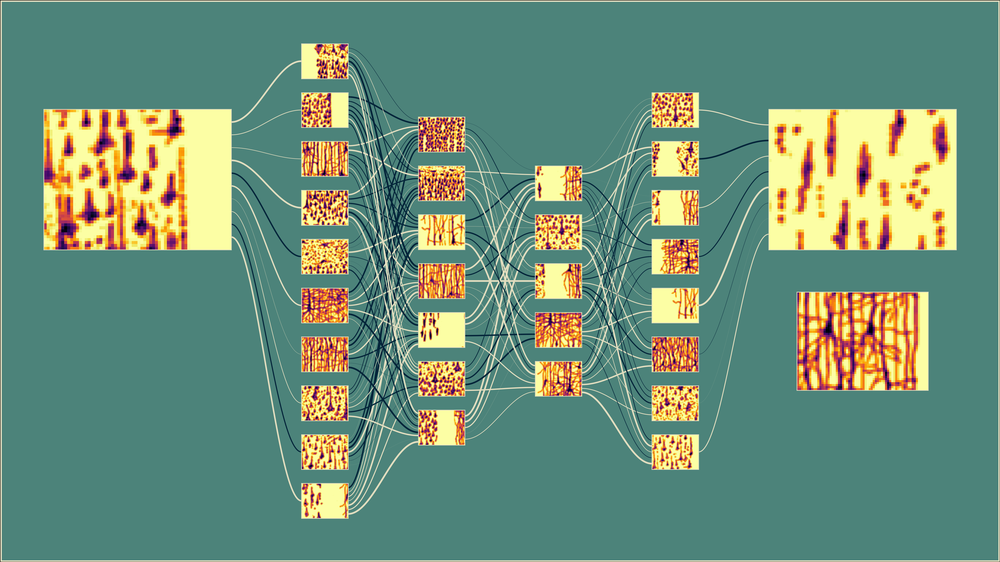

Welcome! Pour yourself a mug of something hot and have a look around.
Case Study courses
Application-driven courses for machine learning students and data scientists. If you are an educator, just send me an email, and I'll set you up to check them out for free.

|
Polynomial Regression
|
|  |
Decision Trees
|
|  |
Time-series Prediction
|
Autoencoders
|
Building Block courses
Short courses focused on specific skills. These can serve as the building blocks for larger-scope case study projects.
|  |
Neural Network Visualization
|
Foundation courses
Concepts and skills for building your own end-to-end machine learning projects. All Foundation content is free.


And here are some excellent crowdsourced recommendations for online learning